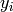
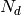
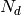

CalculateChiSquared dialog.
Table of Contents
| Name | Direction | Type | Default | Description |
|---|---|---|---|---|
| Function | InOut | Function | Mandatory | Parameters defining the fitting function and its initial values |
| InputWorkspace | Input | Workspace | Mandatory | Name of the input Workspace |
| IgnoreInvalidData | Input | boolean | False | Flag to ignore infinities, NaNs and data with zero errors. |
| DomainType | Input | string | Simple | The type of function domain to use: Simple, Sequential, or Parallel. Allowed values: [‘Simple’, ‘Sequential’, ‘Parallel’] |
| ChiSquared | Output | number | Output value of chi squared. | |
| ChiSquaredDividedByDOF | Output | number | Output value of chi squared divided by the number of degrees of freedom (NofData - nOfParams). | |
| ChiSquaredDividedByNData | Output | number | Output value of chi squared divided by the number of data points). | |
| ChiSquaredWeighted | Output | number | Output value of weighted chi squared. | |
| ChiSquaredWeightedDividedByDOF | Output | number | Output value of weighted chi squared divided by the number of degrees of freedom (NofData - nOfParams). | |
| ChiSquaredWeightedDividedByNData | Output | number | Output value of weighted chi squared divided by the number of data points). | |
| Output | Input | string | A base name for output workspaces. | |
| Weighted | Input | boolean | False | Option to use the weighted chi squared in error estimation. Default is false. |
Calculates a measure of the goodness of a fit in four ways.
The ChiSquared property returns the sum of squares of differences between the calculated and measured values:

where  and  are the measured and calculated values at i-th point.
are the measured and calculated values at i-th point.
The ChiSquaredDividedByDOF is ChiSquared divided by the number of degrees of freedom (DOF):

 where  is the number of data points used in fitting and
where  is the number of data points used in fitting and  is the number of free (not fixed or tied) parameters of the function.
is the number of free (not fixed or tied) parameters of the function.
The ChiSquaredWeighted property sums the squares of the differences divided by the data errors:

Finally, ChiSquaredWeightedDividedByDOF is

Setting the Output property to a non-empty string makes the algorithm explore the surface of the  around its minimum and estimate the standard deviations for the parameters. The value of the property is a base name
for two output table workspaces: ‘<Output>_errors’ and ‘<Output>_pdf’. The former workspace contains parameter error
estimates and the latter shows ‘s 1d slices along each parameter (keeping all other fixed).
around its minimum and estimate the standard deviations for the parameters. The value of the property is a base name
for two output table workspaces: ‘<Output>_errors’ and ‘<Output>_pdf’. The former workspace contains parameter error
estimates and the latter shows ‘s 1d slices along each parameter (keeping all other fixed).
The error table has the following columns:
| Column | Description |
|---|---|
| Parameter | Parameter name |
| Value | Parameter value passed with the Function property |
| Value at Min | The minimum point of the 1d slice of the . If the Function is at the minimum then
Value at Min should be equal to Value. |
| Left Error | The negative deviation from the minimum point equivalent to  . Estimated from analisys
of the surface. . Estimated from analisys
of the surface. |
| Right Error | The positive deviation from the minimum point equivalent to . Estimated from analisys
of the surface. |
| Quadratic Error | standard deviation in the quadratic approximation of the surface. |
| Chi2 Min | The value of at the minimum relative to the test point. |
The pdf table contains slices of the along each parameter. It has 3 column per parameter. The first column of the 3
is the parameter values, the second has the and the third is the probability density function normalised to
have 1 at the maximum.
Example 1
import numpy as np
# Create a data set
x = np.linspace(0,1,10)
y = 1.0 + 2.0 * x
e = np.sqrt(y)
ws = CreateWorkspace(DataX=x, DataY=y, DataE=e)
# Define a function
func = 'name=LinearBackground,A0=1.1,A1=1.9'
# Calculate the chi squared
chi2,chi2dof,chi2ndata,chi2W,chi2Wdof,chi2Wndata = CalculateChiSquared(func,ws)
print 'Chi squared is %s' % chi2
print 'Chi squared / DOF is %s' % chi2dof
print 'Chi squared / NDATA is %s' % chi2ndata
print 'Chi squared weighted is %s' % chi2W
print 'Chi squared weighted / DOF is %s' % chi2Wdof
print 'Chi squared weighted / NDATA is %s' % chi2Wndata
print
# Define a function that models the data exactly
func = 'name=LinearBackground,A0=1.0,A1=2.0'
# Calculate the chi squared
chi2,chi2dof,chi2ndata,chi2W,chi2Wdof,chi2Wndata = CalculateChiSquared(func,ws)
print 'Chi squared is %s' % chi2
print 'Chi squared / DOF is %s' % chi2dof
print 'Chi squared / NDATA is %s' % chi2ndata
print 'Chi squared weighted is %s' % chi2W
print 'Chi squared weighted / DOF is %s' % chi2Wdof
print 'Chi squared weighted / NDATA is %s' % chi2Wndata
Output:
Chi squared is 0.0351851851852
Chi squared / DOF is 0.00439814814815
Chi squared / NDATA is 0.00351851851852
Chi squared weighted is 0.0266028783977
Chi squared weighted / DOF is 0.00332535979971
Chi squared weighted / NDATA is 0.00266028783977
Chi squared is 0.0
Chi squared / DOF is 0.0
Chi squared / NDATA is 0.0
Chi squared weighted is 0.0
Chi squared weighted / DOF is 0.0
Chi squared weighted / NDATA is 0.0
Example 2
import numpy as np
# Create a workspace and fill it with some gaussian data and some noise
n = 100
x = np.linspace(-10,10,n)
y = np.exp(-x*x/2) + np.random.normal(0.0, 0.01, n)
e = [1] * n
ws = CreateWorkspace(x,y,e)
# Gefine a Gaussian with exactly the same parameters that were used to
# generate the data
fun_t = 'name=Gaussian,Height=%s,PeakCentre=%s,Sigma=%s'
fun = fun_t % (1, 0, 1)
# Test the chi squared.
CalculateChiSquared(fun,ws,Output='Test0')
# Check the Test0_errors table and see that the parameters are not at minimum
# Fit the function
res = Fit(fun,ws,Output='out')
# res[3] is a table with the fitted parameters
nParams = res[3].rowCount() - 1
params = [res[3].cell(i,1) for i in range(nParams)]
# Build a new function and populate it with the fitted parameters
fun = fun_t % tuple(params)
# Test the chi squared.
CalculateChiSquared(fun,ws,Output='Test1')
# Check the Test1_errors table and see that the parameters are at minimum now
Categories: Algorithms | Optimization